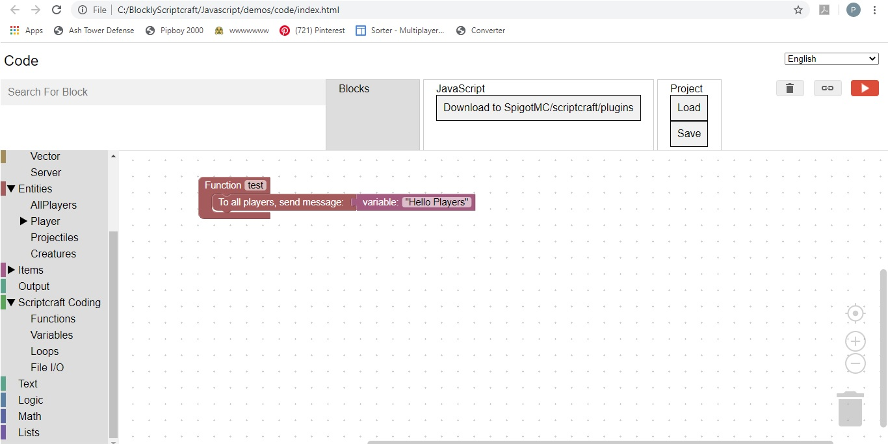

Hello Players

We will create this simple plugin to primarily show the process:
- Open Blockly Scriptcraft by opening the blocklyScriptcraft.html, located in the BlocklyScriptcraft directory, using Chrome
- Enter: Function in the Search For Block box (Upper left)
- Expand the Scriptcraft Coding menu
- Drag and drop Function in the middle
- Change the name of the function to test
- Enter: to all players in the Search For Block box
- Expand the Entities menu
- Expand the All Players sub-menu
- Drag the To All Players, send message block inside the function block
- Enter: var in the Search for Block box
- Expand the Scriptcraft Coding menu
- Drag the Variable: block to attach to the send message block
- Change the variable value to "Hello Players"
Ready to test
- Start the server by double clicking on the runServer.bat (MAC users: double click on start.command) located in MinecraftServer directory
- Ignore the *** Error, this build is outdated *** message
- Wait for the server message: [scriptcraft] js-patch setTimeout() test complete
- From BlocklyScriptcraft, click on the Download to MinecraftServer/scriptcraft/plugins button
- Save as test.js located in the MinecraftServer/scriptcraft/plugins directory
- In the server console, Enter: reload
- Open the Minecraft Launcher
- Play version 14.4
- Press Multiplayer
- Press Direct Connect
- Enter Server Address: localhost, this is your personal computer server
- After the game is started, enter the command: /js test()
- Your message should appear
Trouble Shooting
If you get the message: Referenece Error test is not defined, this means that the server could not find the test function or it did not load properly.
The possible causes of this error are:
- The name of the function block is not test
- The reload command was not issued on the server
- There was a server console error on reload (check the use of ")
- test.js was downloaded to a directory other than: MinecraftServer/scriptcraft/plugins
- test.js was downloaded to test(1).js rather than overwriting test.js